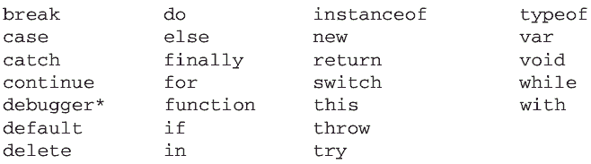
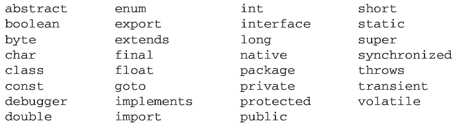

ECMA-262 描述了一组具有特定用途的关键字，这些关键字可用于表示控制语句的开始或结束，或者用于执行特定操作等。按照规则，关键字也是语言保留的，不能用作标识符。以下就是 ECMAScript的全部关键字（带*号上标的是第 5 版新增的关键字）：
ECMA-262 还描述了另外一组不能用作标识符的保留字。尽管保留字在这门语言中还没有任何特定的用途，但它们有可能在将来被用作关键字。以下是 ECMA-262 第 3 版定义的全部保留字：
第 5 版把在非严格模式下运行时的保留字缩减为下列这些：
|
class |
enum |
extends |
super |
|
const |
export |
import |
|
|
implements |
package |
public |
|
interface |
private |
static |
|
let |
protected |
yield |
在实现 ECMAScript 3 的 JavaScript 引擎中使用关键字作标识符，会导致“ Identifier Expected”错误。而使用保留字作标识符可能会也可能不会导致相同的错误，具体取决于特定的引擎。
第 5 版对使用关键字和保留字的规则进行了少许修改。关键字和保留字虽然仍然不能作为标识符使用，但现在可以用作对象的属性名。一般来说，最好都不要使用关键字和保留字作为标识符和属性名，以便与将来的 ECMAScript 版本兼容。
除了上面列出的保留字和关键字， ECMA-262 第 5 版对 eval 和 arguments 还施加了限制。在严格模式下，这两个名字也不能作为标识符或属性名，否则会抛出错误。